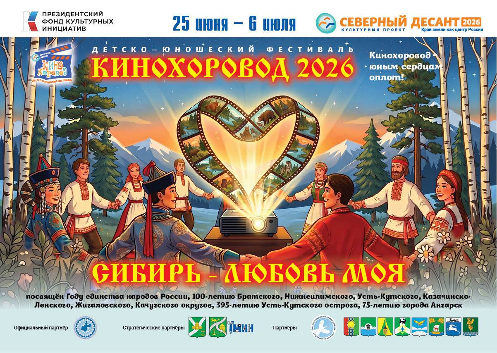
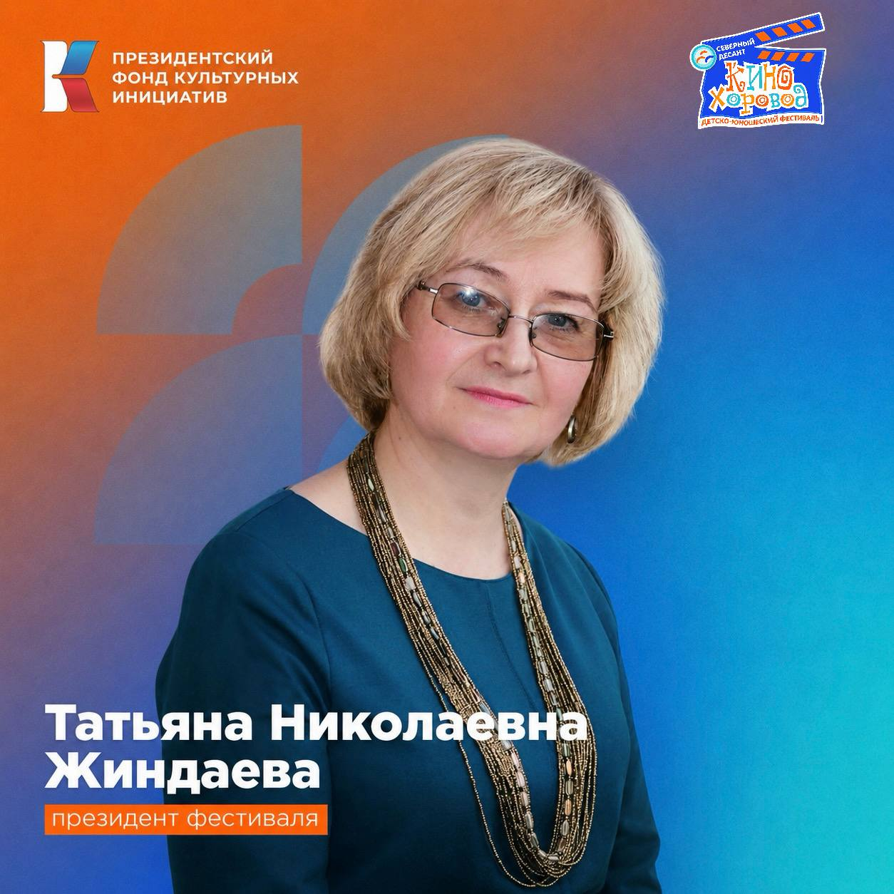

Фестиваль кино для детей «КиноХоровод»
«КиноХоровод» - это фестиваль молодых талантов, который "Северный десант" организует
специально для подрастающего поколения. Сибирь талантлива, дадим проявить себя собственным звёздочкам.
К конкурсу фотографий, снятых на мобильный телефон, добавляем ещё два творческих испытания:
- смотр лучших короткометражных фильмов, созданных в дни работы десанта молодыми участниками,
- конкурс лучших очерков о малой родине.
К участию в последнем приглашаются все желающие.
- смотр лучших короткометражных фильмов, созданных в дни работы десанта молодыми участниками,
- конкурс лучших очерков о малой родине.
К участию в последнем приглашаются все желающие.
Что такое "Кинохоровод"
«Сибирь — любовь моя» не просто тема фестиваля
Это признание в любви родной земле, людям, традициям и памяти, которую мы бережно храним.
Именно об этом будут рассказывать фильмы III Детско-юношеского фестиваля КиноХоровод «Сибирь-любовь моя». В этом году он пройдет при поддержке Президентского фонда культурных инициатив.
🎬 Уже совсем скоро истории, написанные с любовью к Сибири, оживут на экране.
А пока мы с радостью открываем новую страницу нашей «Детской КиноЛетописи Прибайкалья».
Вы готовы, друзья?
Следите за нашими новостями в сообществе ВКонтакте. Впереди много интересного!
Именно об этом будут рассказывать фильмы III Детско-юношеского фестиваля КиноХоровод «Сибирь-любовь моя». В этом году он пройдет при поддержке Президентского фонда культурных инициатив.

🎬 Уже совсем скоро истории, написанные с любовью к Сибири, оживут на экране.
А пока мы с радостью открываем новую страницу нашей «Детской КиноЛетописи Прибайкалья».
Вы готовы, друзья?
Следите за нашими новостями в сообществе ВКонтакте. Впереди много интересного!
Фильмы фестиваля "КиноХоровод. Сибирь — любовь моя " 2026
Мост любви
Белое золото Ерофея
Народный дом. Авдотья
История о священном налиме
Чай по-чалдонски
И вновь закружится КиноХоровод
В этом году - при поддержке Президентского фонда культурных инициатив
Начинается новая глава нашего кинопутешествия- III Детско-юношеский фестиваль КиноХоровод «Сибирь-любовь моя».
Впереди - творчество, открытия, дружба и порядка 10 удивительных историй.
С приветственным словом к участникам, гостям и друзьям фестиваля обращается президент Детско-юношеского фестиваля КиноХоровод - Татьяна Николаевна Жиндаева🧡
"Дорогие друзья - единомышленники, участники, гости!
Поздравляю всех с Детско-юношеским фестивалем КиноХоровод «Сибирь – любовь моя», который впервые проходит при поддержке Президентского фонда культурных инициатив.
В этом году в его объективе наша Сибирь-матушка! И эта тема, как показал курс сценаристики, коснулась каждого ребенка до глубины души. С большой любовью написаны 35 киноновелл! Часть из них мы снимем на фестивале, часть - команды воплотят самостоятельно, используя приобретённые навыки и знания.
Искренне благодарю всех, с кем вместе мы организовывали этот большой детский кинопраздник. Особая признательность официальному партнёру – министерству социального развития, опеки и попечительства Иркутской области и, конечно, нашему родному дому – г. Усть-Кут и Усть-Кутскому МО. Мы знаем, нам здесь всегда рады, ждут и серьезно вкладываются в КиноХоровод. Поздравляю наших стратегических партнёров с 395-летием основания Усть-Кута и 100-летием образования Усть-Кутского района!
Нынче вековую дату отмечают муниципалитеты – участники кинофорума: Братский, Нижнеилимский, Казачинско-Ленский, Жигаловский, Качугский. С вашим замечательным праздником, дорогие друзья! Это очень вдохновляет, когда есть надёжное плечо партнёров! Благополучия и процветания вашим территориям и жителям! Попутного ветра алым парусам третьего КиноХоровода «Сибирь – любовь моя»!
Впереди - творчество, открытия, дружба и порядка 10 удивительных историй.
С приветственным словом к участникам, гостям и друзьям фестиваля обращается президент Детско-юношеского фестиваля КиноХоровод - Татьяна Николаевна Жиндаева🧡

"Дорогие друзья - единомышленники, участники, гости!
Поздравляю всех с Детско-юношеским фестивалем КиноХоровод «Сибирь – любовь моя», который впервые проходит при поддержке Президентского фонда культурных инициатив.
В этом году в его объективе наша Сибирь-матушка! И эта тема, как показал курс сценаристики, коснулась каждого ребенка до глубины души. С большой любовью написаны 35 киноновелл! Часть из них мы снимем на фестивале, часть - команды воплотят самостоятельно, используя приобретённые навыки и знания.
Искренне благодарю всех, с кем вместе мы организовывали этот большой детский кинопраздник. Особая признательность официальному партнёру – министерству социального развития, опеки и попечительства Иркутской области и, конечно, нашему родному дому – г. Усть-Кут и Усть-Кутскому МО. Мы знаем, нам здесь всегда рады, ждут и серьезно вкладываются в КиноХоровод. Поздравляю наших стратегических партнёров с 395-летием основания Усть-Кута и 100-летием образования Усть-Кутского района!
Нынче вековую дату отмечают муниципалитеты – участники кинофорума: Братский, Нижнеилимский, Казачинско-Ленский, Жигаловский, Качугский. С вашим замечательным праздником, дорогие друзья! Это очень вдохновляет, когда есть надёжное плечо партнёров! Благополучия и процветания вашим территориям и жителям! Попутного ветра алым парусам третьего КиноХоровода «Сибирь – любовь моя»!
"КИФИР"
Что это такое и "с чем его едят?"
Проект пресс-центра детско-юношеского фестиваля "КиноXоровод. Сибирь - любовь моя!" 2026.
Взгляд детей на фестиваль со стороны, их впечатления, эмоции и истории.
Пилотный выпуск
КИФИР. Выпуск 1. Подготовка перед съёмками
КИФИР. Выпуск 2. Открытие фестиваля "КиноХоровод. Сибирь - любовь моя!" 2026
КИФИР. Выпуск 3. Кинопоказы "КиноХоровода 2026"
Пилотный выпуск
КИФИР. Выпуск 1. Подготовка перед съёмками
КИФИР. Выпуск 2. Открытие фестиваля "КиноХоровод. Сибирь - любовь моя!" 2026
КИФИР. Выпуск 3. Кинопоказы "КиноХоровода 2026"